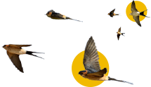

Resultados de
Liderazgo integrado

Este abordaje es tan solo una pequeña aproximación a una teoría que recomendamos estudiar e investigar en profundidad. Desde Njambre entendemos que estos cuatro arquetipos sirven para visualizar e identificar capacidades valiosas para quienes nos enfrentarnos al desafío de emprender.

El camino del autoconocimiento es sinuoso y (¡por suerte!) las personas estamos en constante cambio. Por eso es fundamental destacar que los resultados que obtengas hoy, pueden ser distintos mañana, o en unos años. Y, además, todos tenemos un poco de los cuatro (¡y de los doce!) arquetipos. Estos resultados no pretenden ser una descripción etiquetadora de nada: creemos que conocer estos cuatro arquetipos emprendedores nos puede ayudar a reflexionar sobre cuáles son nuestras capacidades innatas, cuáles son nuestras sombras, qué otras capacidades podemos seguir desarrollando y cómo se conjugan estos distintos perfiles dentro de nuestro equipo.
En el círculo se representan, según tus respuestas, las habilidades más y menos desarrolladas de los cuatro arquetipos emprendedores, con sus luces y sombras. Todos tenemos aspectos de los cuatro arquetipos, y esta instancia de autoreflexión puede servirte para buscar desarrollar esas habilidades en las que quieras seguir creciendo.

Te daremos el orden de los arquetipos según tus resultados, te recomendamos que leas los cuatro (y no solo el que te dio más alto o más bajo) porque creemos que todos somos un poco de todo, y hay momentos en que desarrollamos o mostramos más una característica, y momentos en el que nos viene bien desplegar otras. Los cuatro arquetipos tienen sus luces y sus sombras.

Todos tenemos aspectos de los cuatro arquetipos, hay momentos en que desarrollamos o mostramos más una característica, y momentos en el que nos viene bien desplegar otras.